04 长波衰退中的增长与通胀
📑 本章目录
- 加载中...
2008年两个最让人困惑的问题：① 美元到底是真的稳住了还是暂时的？② 美元在升值预期下，为什么油价还在创新高——到底是美元跌了所以油贵（标价因素），还是真的供需紧张？
这两个问题本质上是同一个问题：在长波衰退期，通胀和增长的博弈，决定了世界经济的走向。用中周期（9-10年）的框架已经看不清了，必须用长波（50-60年）的视角。
长波衰退期一定会有资源约束问题——因为萧条期投资不足，供给萎缩。但金属和石油有本质区别：金属可以回收再利用，技术进步能缓解稀缺；石油是不可再生的——烧了就没了。所以资源约束最终以石油价格的形式爆发。
回顾第四次长波（1948-1991）：1948-1966 技术推动增长，增长远超通胀；1966-1973 资源需求上升，通胀开始超过增长；1973-1982 成本推动型通胀主导，增长靠大减速来降通胀；1982-1991 新技术复苏。
2008年，美元本位下第二次出现长波资源约束。问题是：美元没有黄金约束，美国可以无限印钱 → 需求被放大、产能被信用催生 → 资源约束更多地向通胀+资产泡沫演化。图4-1清晰展示了美国经济增长与通胀之间此消彼长的转化过程：
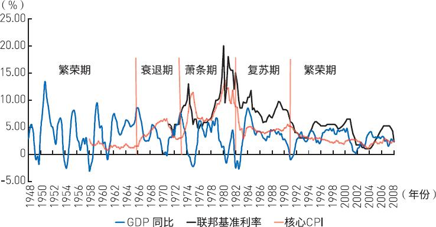
第五次长波的繁荣期终点是2004年——不是2000年网络泡沫。2004年之前高增长低通胀，2004年之后通胀越来越严重，和1970年代长波衰退的特征一模一样。第四次长波的经验：通胀还没超过增长率中枢时，经济还能撑一阵。2007年次贷危机后美国还能维持增长，就是这个原因。但关键要盯住通胀率什么时候失控。
长波衰退期 = 通胀期。历史上的两次"增长与通胀背离"——1920年代和1970年代——都在长波衰退期。原因就两个：资源约束 + 信用膨胀。下面图4-2展示了罗斯托划分的价格长波阶段，图4-3和图4-4分别展示了美国和日本经济增长与物价的长期波动关系：
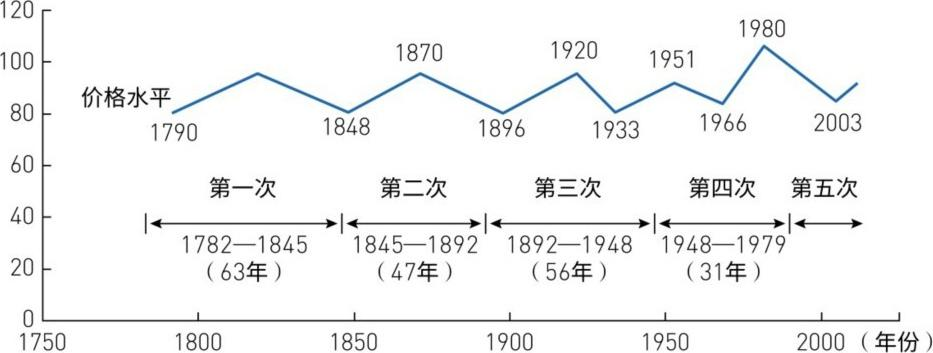
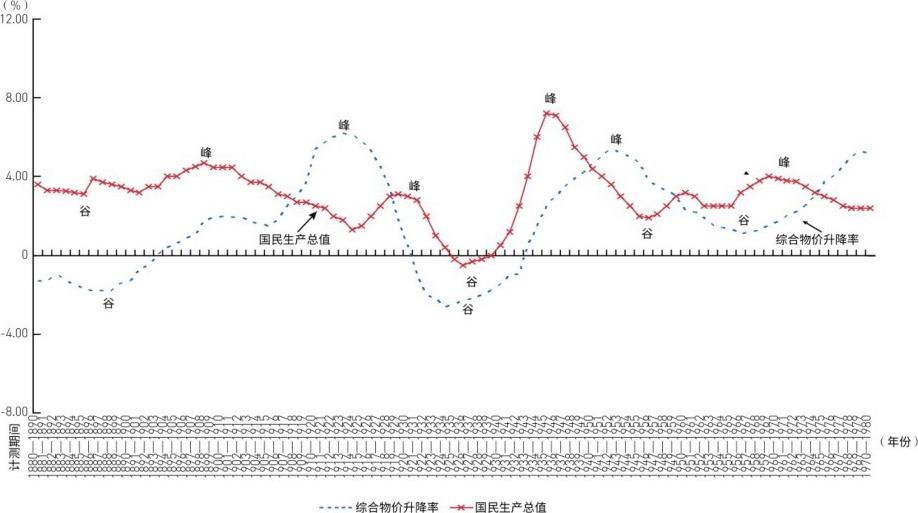
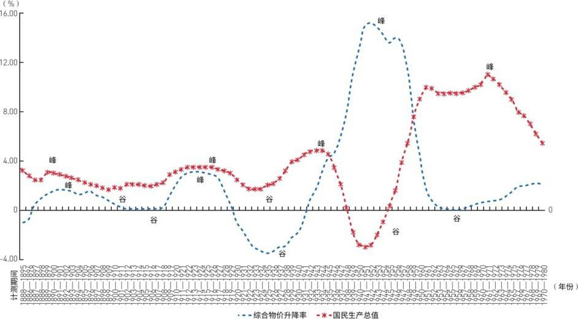
核心矛盾：经济都衰退了，油价为什么还能涨？日本学者木船久雄的研究解释：能源消费长期跟经济增长是1:1的关系——能源不存在脱离经济基本面的无休止上涨。但短期有"惯性"——几十年培养起来的高耗能产业和消费习惯，不会因为涨价一下子就改变。所以经济衰退后，能源需求还会惯性维持一段时间，价格还能高位运行。但如果出现极端情况（石油危机），那是战争等偶然因素。图4-5和图4-6分别展示了美日两国的能源弹性值波动——可以看到弹性值的剧烈偏离和回归：
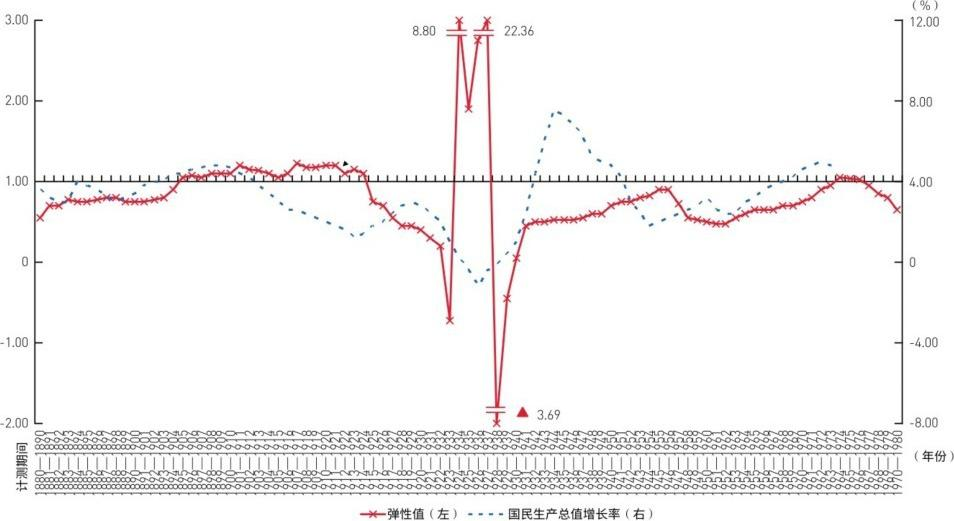
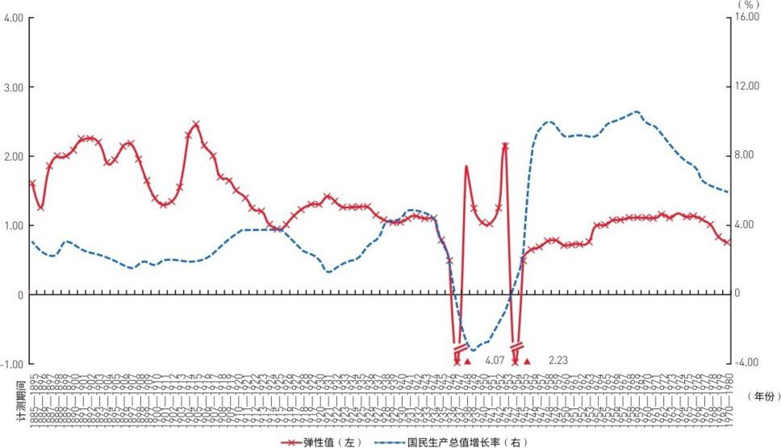
长波衰退期美元从未反转，只有反弹。1970年代美元两次企稳，原因不是美国变强了，而是别人更惨——此消彼长。1973年石油危机中，日本最惨（因为产业结构重化、最依赖石油），德国次之（有欧共体分摊风险），美国相对最强（产业已转型+石油自给率高）。美元因此而反弹，但没有反转——因为长波衰退期美元不可能反转。
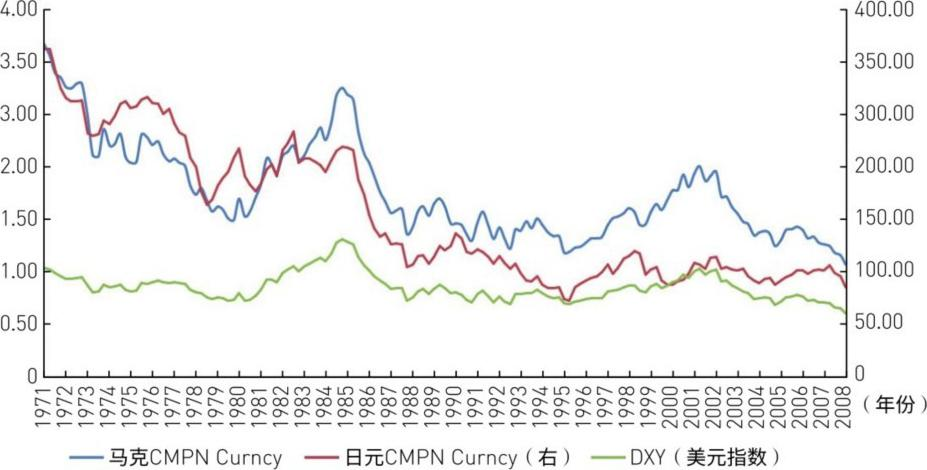
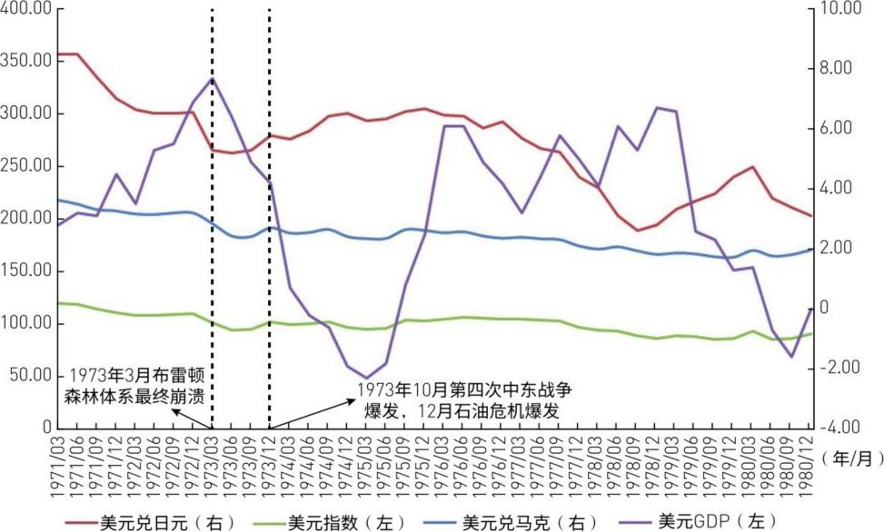
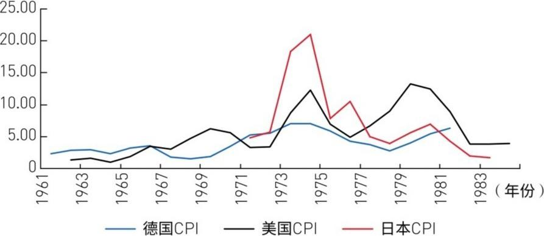
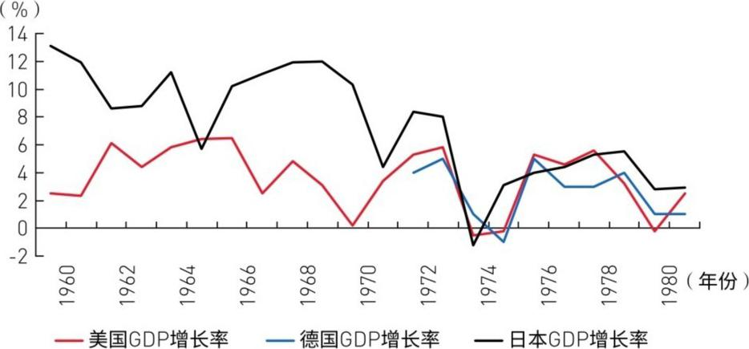
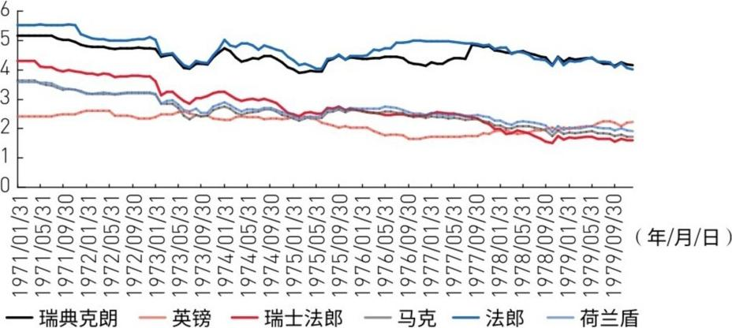
1980年代美元真正反转是滞胀被解决之后的结果——高利率+资本自由流入推升美元。现在（2008年）远没到那个阶段。
共生模式其实1960年代就萌芽了——美国通过美元扩张支撑内需、美元回流弥补储蓄不足。制造业从美国转移到日本，再到亚洲四小龙，再到中国——"雁形发展模式"。美国越来越脱离制造、越来越依赖消费。和1970年代相比，美国对通胀的抵抗力变强了——因为消费品都是中国造的，便宜。
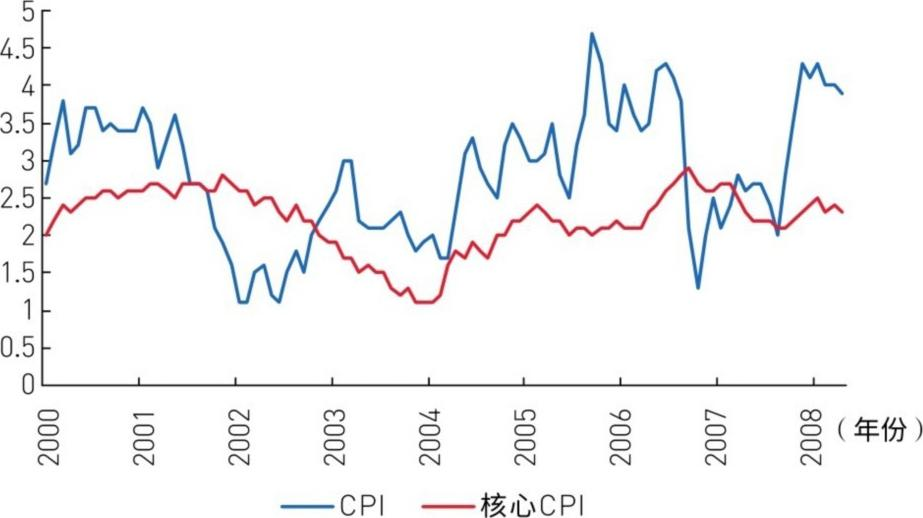
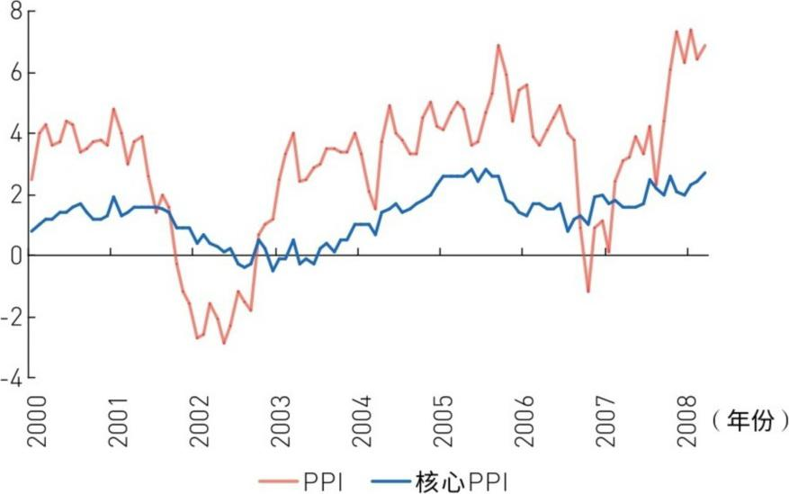
美国通胀不高 = 两个原因：① 消费结构对资源价格不敏感；② 中国帮美国扛了通胀。这给了美联储降息的空间 → 美元反弹预期 → 但新兴市场还没衰退 → 需求还在 → 油价继续涨。
但这是暂时的——中国制造业已经快撑不住了，美国核心通胀也在上升。最终，新兴市场国家的衰退，是世界经济恢复平衡的代价。
世界经济调整分三步走：
第一阶段：美国先跌。降息托底 → 美元贬值 → 大宗商品涨价。
第二阶段：通胀和币值恐慌。美元贬值拖累欧日 → 新兴市场还在撑着需求 → 大宗商品高位剧烈波动。
第三阶段：大宗商品崩。欧日跟着美国衰退 → 新兴市场出口崩溃 → 全球需求同步回落 → 商品牛市结束。
当前（2008年）正从第一阶段向第二阶段过渡。
欧洲救不了世界。技术创新不够、失业率太高、工会太强——没法像美国那样搞赤字消费来当世界引擎。制造业功底好，受害较轻，但别指望它拯救全球。
中国也扛不久。价格管制（成品油、电价非市场化）在帮全球缓释通胀，但这不持久。外需一回落 + 价格放开 → 中国本轮周期见底。
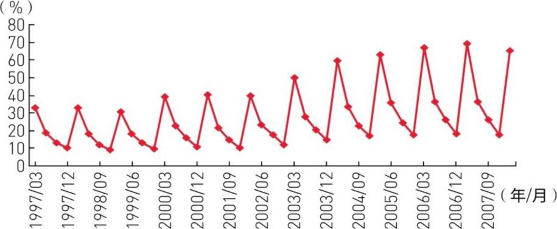
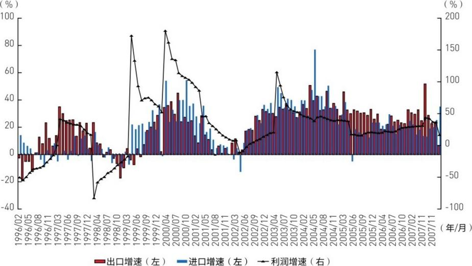
2000年科网泡沫 vs 2008年房地产泡沫，本质不同：科网泡沫有真正的技术创新做支撑（信息技术），泡沫破灭前美国还有财政盈余。房地产泡沫纯粹是靠流动性和制度漏洞吹起来的，没有真实生产率提升做后盾。
这次降息效果会比2001年差很多：① 银行资产负债表受损更严重，信贷紧缩更狠；② 没有新技术革命支撑，降息吹不出下一个泡沫了——1998年降息吹出科网泡沫，2001年降息吹出房地产泡沫，2008年降息能吹出什么？答案是什么都吹不出来，因为实体经济的内在增长动力已经耗尽。
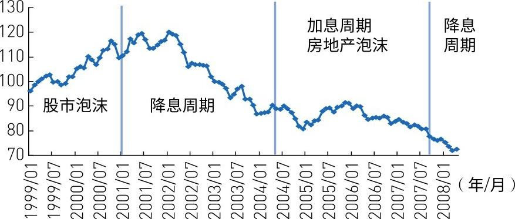
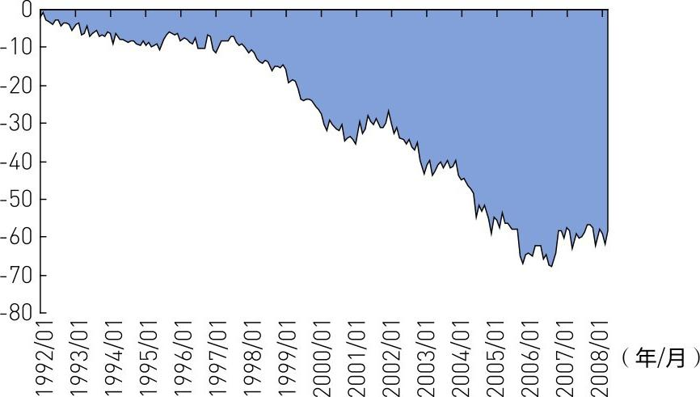
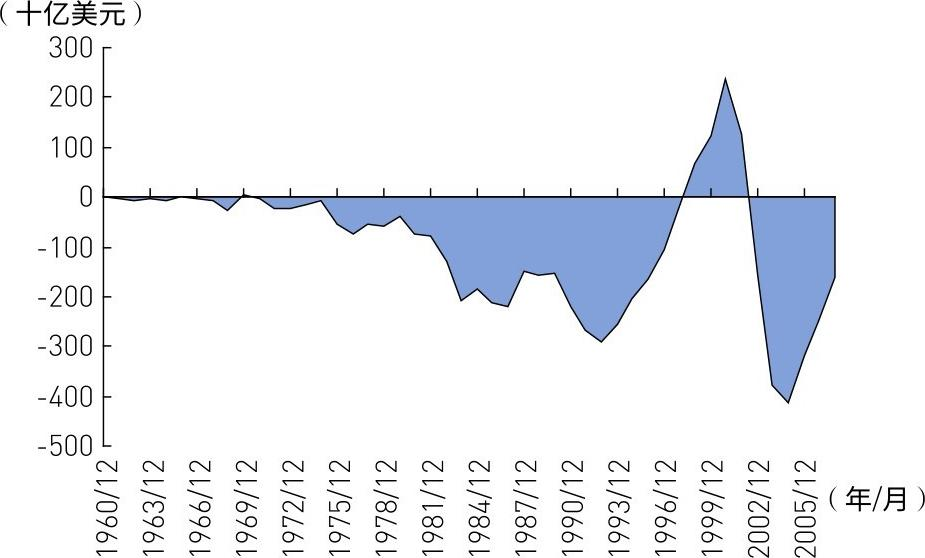
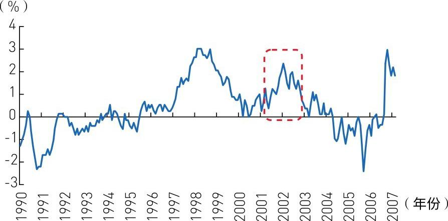
结论：美元只是反弹，不是反转。
长波衰退期美元从未反转，只有反弹。美国复苏三条路都走不通：① 新技术革命？第四波刚结束，新的还早。② 降息吹泡沫？银行资产负债表坏了，可能遇到流动性陷阱。③ 制造业出口？美元贬值有利于出口但远远不够。2008-2009年美国即使复苏，力度也有限。美元反弹只是欧洲比美国更差的结果，不是美国变好了。
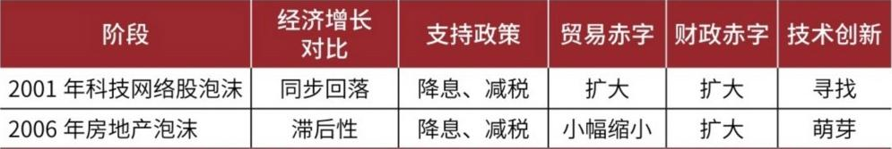
2008年6月，次贷危机爆发近一年。这篇报告用长波框架回答了当时最核心的问题：
1. 通胀与增长的博弈是主线。长波衰退期 = 资源约束 + 信用膨胀 → 通胀上行。2004年进入长波衰退，和1970年代逻辑一样。
2. 能源有惯性，但不会脱离基本面。经济衰退后油价还能涨一阵（消费惯性），但长期一定回归增长中枢。
3. 美元只是反弹不是反转。长波衰退期美元从未反转——反弹靠的是"别人更惨"（此消彼长）。真正的反转要等新的技术创新。
4. 共生模式在嬗变。美国比1970年代更抗通胀（中国扛着），但中国也快扛不住了。
5. 调整分三阶段。美国先跌 → 通胀恐慌 → 全球同步衰退。2008年正从一阶段向二阶段过渡。最终，新兴市场衰退之日，就是商品牛市终结之时。
| 原文术语 | 大白话解释 |
|---|---|
| 长波衰退期 | 康波周期（50-60年）的下行阶段，特征是资源约束+通胀+资产泡沫 |
| 资源约束 | 资源供给跟不上需求增长，卡住经济脖子 |
| 信用膨胀 | 美元体系下信贷无限制扩张，制造虚假需求 |
| 能源弹性值 | 能源消费增速 ÷ GDP增速。长期=1，短期会偏离 |
| 雁形发展模式 | 产业从美国→日本→四小龙→中国依次转移的模式 |
| 此消彼长 | 美国经济衰退时美元反弹，不是因为美国好，而是别人更差 |
| 流动性陷阱 | 利率降到零也没人借钱投资——货币政策失效 |
| 资产负债表问题 | 银行资产端（贷款/证券）大幅缩水导致信贷紧缩 |
| 价格管制 | 中国政府对成品油、电价等实行行政定价，扭曲市场 |